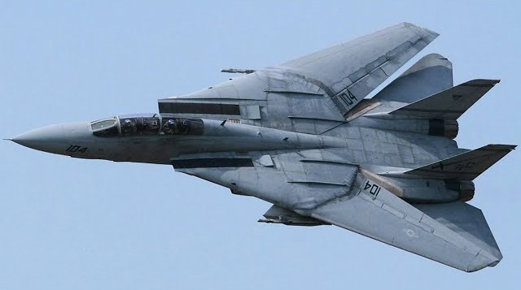

F-14 Tomcat
Az F–14 Tomcat negyedik generációs, kéthajtóműves, szuperszonikus, változtatható szárnynyilazású vadászrepülőgép, melyet a Grumman fejlesztett ki az Amerikai Egyesült Államokban, az Amerikai Haditengerészet repülőgép-hordozóinak légvédelmére, az F–4 Phantom II és az F–8 Crusader repülőgépek leváltására. Katapulttal indítható, fékhoroggal felszerelték, levegőben utántölthető. Ezek a repülőgépek ma is szolgálatban állnak. Az 1980-as években felderítő feladatok ellátására is képessé tették, az 1990-es évektől irányított bombák segítségével földi célokat is támadhatott. Az Amerikai Haditengerészetnél 2006 szeptemberéig állt szolgálatban, utódja az F/A–18E Super Hornet. Az F–14 több filmben (Top Gun, Végső visszaszámlálás) kapott főszerepet, nem utolsósorban emiatt nagyon népszerű, szinte kultikus repülőgépnek számít.